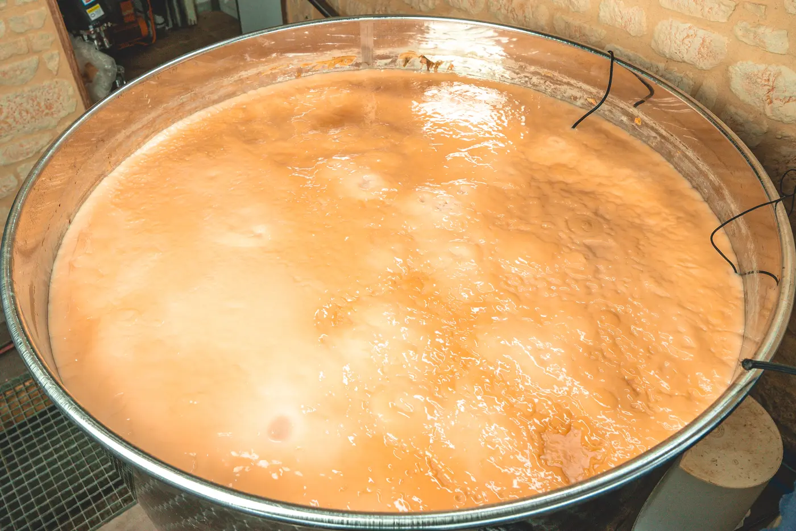
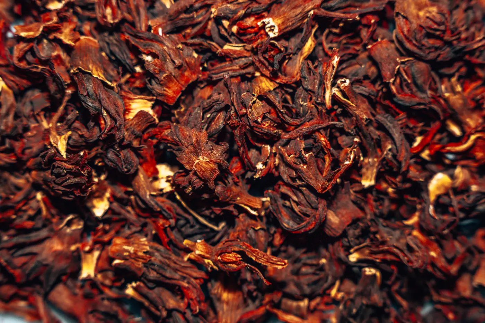
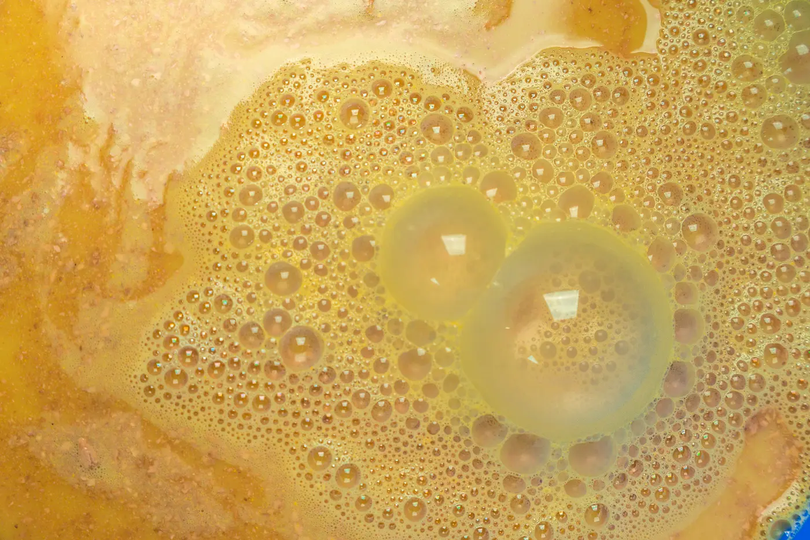
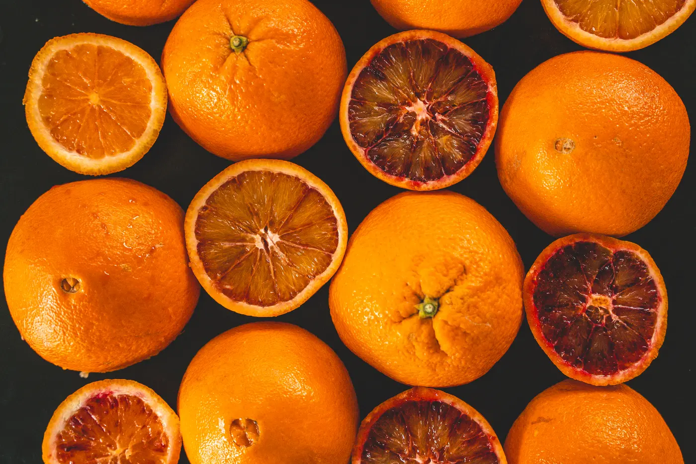
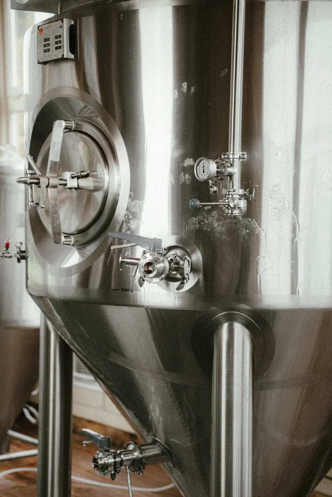

Carnets de fermentation
-
1.

Qu’est-ce que la fermentation, vraiment ? -
2.

L’hibiscus, fleur acidulée venue de loin -
3.
 Une journée à la brasserie de Saint-Geniès
Une journée à la brasserie de Saint-Geniès
-
4.

D’où vient le pétillant ? -
5.

Orange sanguine : la saison courte d’un agrume -
6.
 Le gingembre, du champ à la cuve
Le gingembre, du champ à la cuve
-
7.

Pourquoi notre kombucha n’est pas pasteurisé -
8.
 Vanille bourbon : l’arôme qui prend son temps
Vanille bourbon : l’arôme qui prend son temps